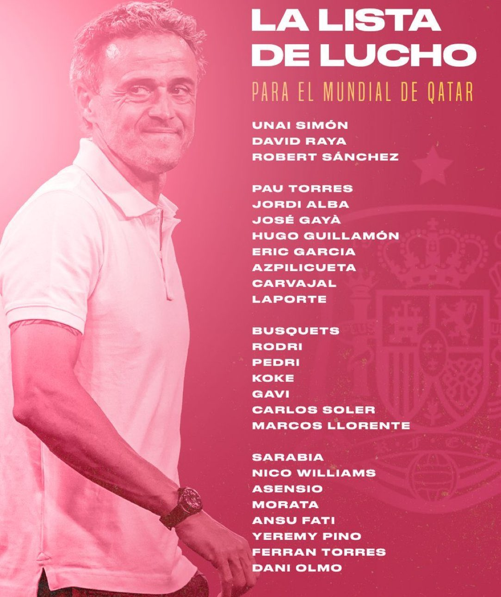
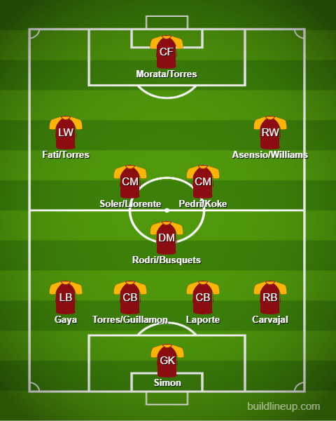

Squad Reaction - Spain

A lot of controversy from Enrique with De Gea being left out of the provisional 55-man squad. My feeling is that the relationship severed after Euro 2020. He relies on playing well from the back including the goalie. Even though De Gea has relatively improved under Ten Hag in that aspect, he still has a long way to go. Unai Simon is already good at that aspect. So are Robert Sanchez and Raya. Another omission is Ramos who will not be going to his 5th World Cup like Messi and Ronaldo which is sad. I think there are young and good players who can do the job well. Guillamon who is a young CDM is actually named as a defender which is interesting. Fullbacks are mostly Gaya and Carvajal. In midfield, he could either go Rodri but he does seem to trust Busquets as well. I would go with Rodri for the form. In the center, Soler and Koke could mostly be the ones he goes for but Pedri and Gavi could very well start a game or two here and there instead of them. Maybe not as a duo yet but one of them along with Soler or Koke. I think my pick is Soler and Pedri. To the attack, Fati and Torres could fight for the LW spot. In the RW spot, Nico Williams is going to a major tournament which is amazing for him. I think Asensio, Sarabia, and Pino are also rather good options. In ST, he only has Morata and no Moreno which is weird. Torres and Fati could also be at ST but let’s see how that goes.
The lineup:
